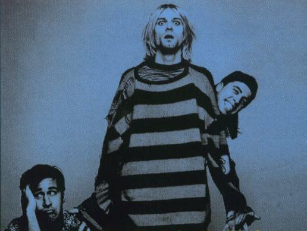

33 факта о Курте Кобейне.

- 1. Курт был одет на Хеллоуин в костюм из разрезанной резиновой женщины когда ему было 1 год.
- 2. В детстве у Курта был воображаемый друг «Boddah».
- 3. Маленький Курт часто смотрел телевизор до поздней ночи.
- 4. В детстве У Кобейна была барабанная установка в виде Микки Мауса.
- 5. В детстве Курту прописали Риталин чтобы снизить его гиперактивность.
- 6. В 6 лет Курт кидал банки 7-Up заполненные камнями в полицейские машины.
- 7. В начальных классах Курта записали на борьбу, но он не хотел драться и всегда сидел на ковре ничего не делаю и скрестив руки.
- 8. Еще подростком Курт более 8 месяцев жил у своего друга дома.
- 9. «Organized Confusion» – первые композиции Курта, которые он написал в 1982 году, когда находился у своей тети Мари.
- 10. Кобейн спал в комнате ожидания госпиталя Grays Harbour Community, где он родился, в период когда был бездомным.
- 11. Перед тем как он начал играть в Nirvan’e Курт хотел попасть в группу Melvins, но его туда не взяли.
- 12. До известности Кобейн работал инструктором в детском бассейне.
- 13. У курта был шанс стать участником ВМФ США, он даже много обсуждал это с вербовщиками.
- 14. Когда Нирвана начинала карьеру, Курт говорил что они репетируют 5 ночей в неделю.
- 15. В начале карьеры группы Nirvana был прислан факс от группы Металлика с предложением о сотрудничестве, но они от него отказались.
- 16. Когда Nirvana стала знаменита они захотели сыграть на 1 международном фестивале андерграунда в Олимпии, но организаторы отказали им, чем очень сильно ранили Кобейна.
- 17. У Курта бывали периоды в жизни когда его выворачивало перед выступлениями.
- 18. Были времена когда Курт мог сидеть в углу в течение 45 минут и не произносить ни слова.
- 19. Кобейн страдал хроническими болями в желудке и чтобы их не чувствовать начал ежедневно употреблять героин.
- 20. 100$ в день – такая сумма уходила у него на героин.
- 21. После исполнения "Territorial Pissings” на Saturday Night Live, Курт с басистом начали целоваться, и SNL, транслировавший передачу, отказался воспроизвести в повторе.
- 22. Курт получил передозировку наркотиков через несколько часов после выступления Нирваны на Saturday Night Live (через неделю кстати Nevermindстал номером 1 в чарте). В 7 утра его нашла Кортни Лав лежащим на полу, ей удалось привести его в чувство при помощи брызг воды.
- 23. Во время романа с Кортни Лав Кобейн начал носить боксеры.
- 24. Курт и Кортни стали жить вместе в маленькой комнате в квартире у друга в канун Рождества 1991 года.
- 25. Курт с Кортини в 1992 году потратили 1 миллион долларов: 80 тыс. $ – личные траты, 380 тыс. $ – налоги, 300 тыс $ – на дом в Вашингтоне, а все что осталось на адвокатов и врачей. При этом Курт заявил, что это не так уж много.
- 26. Перед тем как выпустить в свет "Smells Like Teen Spirit” шоу, Курт воскликнул: "Courtney Love is the best fuck in the world.”
- 27. Super-8» - серия фильмов, созданных Куртом Кобейном. На низ он потратил многие годы. Примечательно, что в одном из них присутствует сцена самоубийства Курта.
- 28. В свободное время он часто покупал куски сырого мяса и стрелял по ним в лесу.
- 29. Из одного интервью можно было подчеркнуть, что Курт придерживается мнения о том, что Sex Pistols были намного круче чем Clash.
- 30. «Близкие контакты третьей степени» – фильм, из которого Курт Кобейн знал все диалоги точно слово в слово.
- 31. Первое издание Naked Lunch, подписаное автором Уильямом Берроузом – это одна из самых дорогих Курту вещей, он очень дорожил ею.
- 32. Впервые Курт увидел себя по телевизору на канале MTV 28 сентября 1991 года.
- 33. "Gigantic” группы Pixies – самая любимая песня Курта Кобейна.